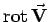
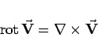
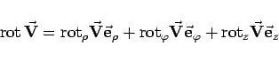
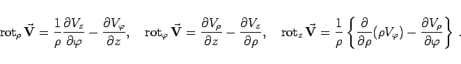
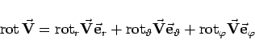

Inhalt Index DeskTop Bronstein

 Vektoranalysis und Feldtheorie Räumliche Differentialoperationen Rotation des Vektorfeldes Rotation in verschiedenen Koordinaten
Vektoranalysis und Feldtheorie Räumliche Differentialoperationen Rotation des Vektorfeldes Rotation in verschiedenen Koordinaten


Das Vektorfeld  ist durch das Vektorprodukt aus Nablaoperator und Vektor  gemäß
gemäß
|  | (13.57b) |
darstellbar.
|  | (13.58a) |
mit
|  | (13.58b) |
|  | (13.59a) |
mit